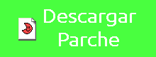

Metroid
Año:
1986
Género:
Plataformas, aventuras, exploración
Consola:
NES
Versión de la traducción:
1.0
Porcentaje traducido:
99%
El primero, el clásico. Puesto a la venta en 1986 en America y Europa, el juego nos hacía recorrer el Planeta Zebes sin la ayuda de un triste mapa, manejando a un personaje de sexo desconocido llamado Samus embutido en una armadura rojiza. Fue una sensación en su epoca, y un juego muy recordado (sus 1000 bugs muy aprovechables le añadían encanto).
Este juego lo traduje y testeé, literalmente, en una tarde. Y a pesar de ello, la calidad es sorprendentemente buena. No haré más versiones a no ser que surja algun problema.
